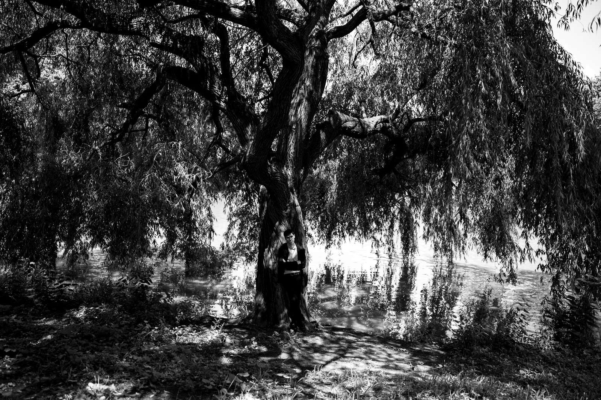

NK
Nitsan Kolko
Pianist
&
Composer
Effervescent
New single · Listen now
Stories Untold
Debut trio album · Nov 13
Effervescent
Watch
Live Shows
Tour dates & tickets
Store
CDs & sheet music
Spotify
Apple Music
YouTube
Booking & Contact
nitsankolko.com